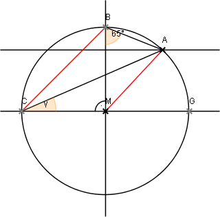

Lösung Nr 8c, p. 29

Gesucht: Winkel γ
Lösung:
Da ΔMAB gleichschenklig (Spitze M), so misst der Zentriwinkel, der zum kleineren Bogen über AB gehört, (180°- 130°)= 50°
Also misst der dazugehörige Peripheriewinkel (Scheitel C) 25°
Da ΔCMB rechtwinklig gleichschenklig, so ist γ + 25° = 45°
Daher muss γ = 20° sein.